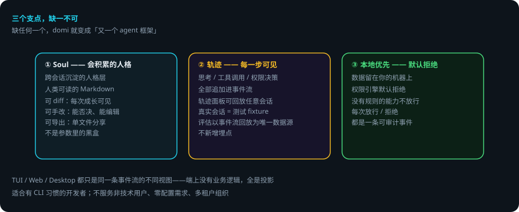

DOMI · DOCS
domi 是什么
面向第一次接触 domi 的人：它解决什么问题、和别的 agent 工具有什么不同、你能拿它干什么。 想直接上手看快速开始；想读架构看架构。
先说结论
- domi 是一个本地 Agent 运行时：对话、工具调用、权限决定全部记成一条只追加的事件流。
- 它不是黑盒：每一步思考都可见、可回放、可审计。
- 三个支点缺一不可：Soul（会积累的人格）、轨迹（每一步可见）、本地优先（默认拒绝）。
- 数据留在你自己的机器上；权限引擎默认拒绝，每次放行 / 拒绝都是一条可审计事件。
- 三端（TUI / Web / Desktop）只是同一条事件流的不同视图。
一句话
domi 是一个会积累「人格」的、你能看见它每一步在想什么的本地 Agent 运行时。
三个支点

缺任何一个，domi 就变成「又一个 agent 框架」：
1. Soul —— 会积累的人格
跨会话沉淀的人格层。它不是藏在参数里的黑盒，而是一份人类可读的 Markdown：
- 可 diff：每一次成长都能看到改了什么
- 可手改：你能否决、能编辑它
- 可导出分享：单文件导出，别人 import 后能复现你的行为差异
2. 轨迹 —— 每一步都可见
思考、工具调用、权限决策都是追加进事件流的事件。轨迹面板可以回放任意一次会话——甚至真实会话可以直接当作测试 fixture 重放（评估不新增埋点，以事件流回放为唯一数据源）。
3. 本地优先 —— 默认拒绝
- 你的数据留在你的机器上，不上云
- 权限引擎默认拒绝：没有规则的能力不放行
- 每一次放行/拒绝都是一条可审计事件
你能拿它干什么
- 日常开发任务：读代码、改代码、跑测试的完整闭环，全部在终端里可见
- 长任务：任务在 daemon 里跑，关掉终端也继续；重启后从上次完成的节点接着跑
- 多模型：多家供应商、本地模型（Ollama）或网关（LiteLLM / OpenRouter）切换
- 定时任务：cron 调度，在 domid 里托管
- 扩展：插件（tool / skill / mcp / ui）、MCP 接入、Skill 编写
三端，同一件事
TUI（全屏终端）、Web（浏览器）、Desktop（桌面应用）都只是同一条事件流的不同视图——端上没有业务逻辑，全是投影。同一批会话，三端共享。
适合谁
- 主：有 CLI 习惯的开发者，愿意为可控性接受配置成本，对「黑盒 agent」有戒心
- 次：想自建 agent 工作流的技术团队
domi 明确不服务：非技术用户、需要开箱即用零配置的人、需要多租户/团队协作的组织。
下一步
- 想马上跑起来：快速开始
- 想了解内部怎么工作：架构 → Agent Loop 内部机制
- 想给它加东西：插件开发 · Skill 编写